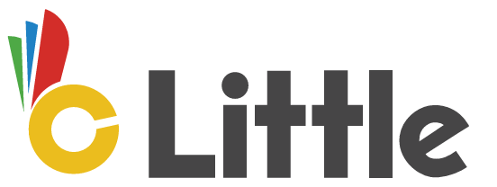
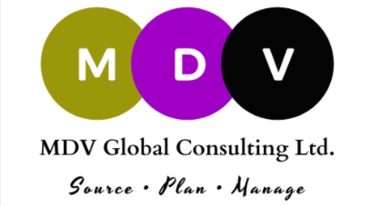
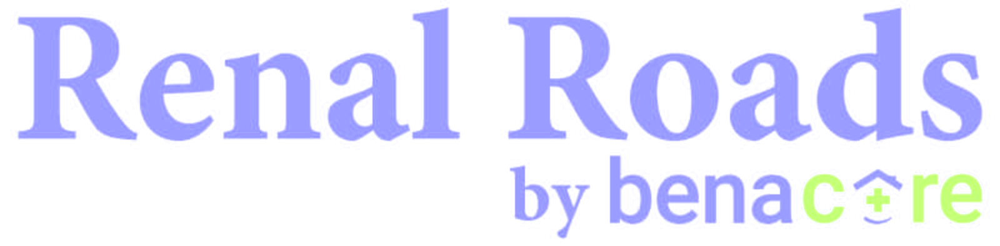
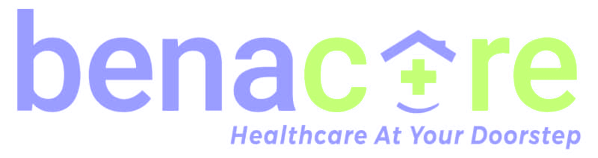
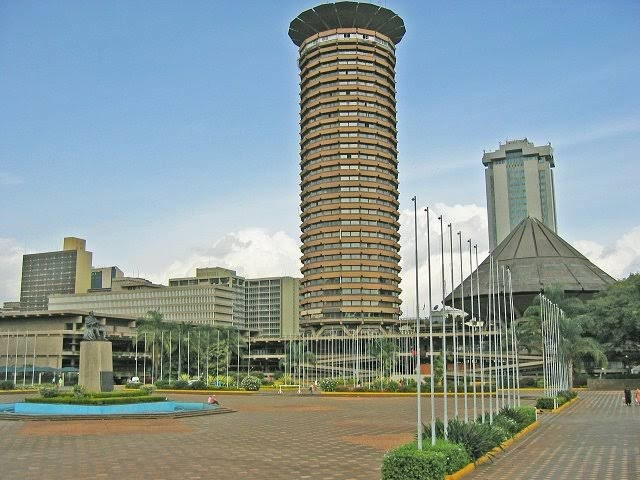

♧
One continental platform
Governments, policymakers, clinicians, researchers, payers, industry, development partners, patients and civil society come together to address kidney health as both a health and economic priority.
The cost of kidney disease is a bill that Africa cannot afford to keep paying. Leaders, clinicians, researchers, policymakers and partners will come together to turn evidence into policy, investment and action.
The Africa Kidney Health Summit brings together the people who shape policy, allocate health budgets, deliver care, generate evidence and build health systems around one shared continental agenda.
Learn more →
Governments, policymakers, clinicians, researchers, payers, industry, development partners, patients and civil society come together to address kidney health as both a health and economic priority.
Evidence will inform policy priorities, financing and budget decisions, prevention strategies, clinical practice and measurable commitments that can be taken forward after the Summit.
Solutions must reflect African health systems—locally relevant, financially sustainable and capable of improving prevention, early detection and access to care.
The summit programme is built around the four priority areas that will shape the next decade of kidney care on the continent.
Visual stories from the kidney health ecosystem across Africa.


Three days building from the scale of the crisis to Africa's public commitments.
Confirmed speakers from across the continent and international partners.
 🇰🇪 Kenya
🇰🇪 KenyaChief of Nephrology, Nairobi Transplant Institute
 🇬🇭 Ghana
🇬🇭 GhanaHead of Nephrology, Accra Regional Hospital
 🇳🇬 Nigeria
🇳🇬 NigeriaHead of Paediatric Nephrology, Lagos Children's Hospital
 🇹🇿 Tanzania
🇹🇿 TanzaniaDirector, Global Dialysis Outcomes Registry
 🇪🇬 Egypt
🇪🇬 EgyptSenior Researcher, Cairo Kidney Institute
 🇿🇦 South Africa
🇿🇦 South AfricaDirector, National Renal Care Programme
 🇸🇳 Senegal
🇸🇳 SenegalLead, West Africa Kidney Screening Initiative
The summit is open to everyone working to improve kidney health across the continent—from ministries and clinicians to students, advocates and industry partners.
Government, policy and health system leaders shaping budgets, regulation and national priorities.
Clinicians, nurses, allied health professionals and frontline care teams.
Researchers, universities, epidemiologists and evidence leaders.
Patient groups, NGOs, foundations and community organisations.
Hospitals, insurers, manufacturers, diagnostics, pharma and health technology.
Health communicators, societies, associations and networks.
Register directly, request documentation, or ask about a group rate—pick the option that fits.

Book your delegate spot via the Little Events Ticketing App. Select your ticket type, enter your details, choose a payment method and complete the transaction.
Continue to ticketing →
Need a formal letter or pro forma invoice for a visa application, attendance approval or funding?

Bringing a delegation, or registering as a student? Discounted rates are available.
Two clear ways to participate: showcase solutions through exhibition or support the Summit through a strategic partnership.
Put your products, diagnostics, services or technology in front of clinicians, policymakers and health-system leaders.
Align your organisation with Africa's kidney health agenda through strategic visibility, knowledge exchange and programme support.




For registration, partnership, media and programme enquiries, contact the Secretariat.
Africa's premier conference venue, with full accessibility, translation facilities and delegate services, and a secretariat on hand for registration, sponsorship, media or programme enquiries.
Registration opens 08:00 EAT on 9 March. Opening plenary begins 09:30 EAT.
Harambee Avenue, Nairobi. 20 minutes from Jomo Kenyatta International Airport.
Visa letters, hotel block bookings, airport transfers and accessibility support.

Africa Kidney Health Alliance
Nairobi, Kenya